SFT Practice — LR Sweep v1
What I learned running a 4-way LR sweep on SmolLM2-135M + LoRA. Personal notes, instructional tone.
This was the first full SFT run end-to-end. Goal wasn't to train a SOTA model — it was to feel the pipeline, learn what matters, and get experiential answers for interview questions about DPO β, LR sensitivity, and LoRA. Everything here is meant to teach future-me what I already figured out so I don't re-learn it in three weeks.
The one-sentence version: higher LR kept winning on training loss, but the qualitative output tells a different story — and the right LR lives in a narrow window that neither the loss curve alone nor the eyeball test alone reveals.
Experimental setup
- Model: SmolLM2-135M base (untuned). Small enough to iterate in ~2 min per run.
- Data: tatsu-lab/alpaca, first 2,000 examples, 1 epoch.
- Method: LoRA on attention modules only (q/k/v/o). r=16, α=32, dropout=0.05.
1.35%trainable params (1.84M / 136M). - Loss: cross-entropy on completion tokens only (
completion_only_loss=Truein TRL 1.x). - Batching: per-device batch 4, grad accum 8 → effective batch 32. Max seq len 1024, cosine schedule, 3% warmup, weight decay 0.01.
- Infra: 4×
g6.xlarge(L4, 24GB VRAM, bf16), parallel via spot. Seed 42 everywhere. - Grid: LR ∈ {1e-4, 3e-4, 1e-3, 3e-3}. Everything else fixed.
Headline results
TL;DR
Final training loss monotonically decreases across the LR grid — no divergence anywhere up through 3e-3. The "optimal LR" is not bracketed. Qualitatively, lr=3e-3 wins at 1 epoch, but the LLM judge shows the middle (lr=3e-4 vs lr=1e-3) is a statistical tie. The bigger surprise: extending to 4 epochs collapses the quality gap between LRs (win-rate spread 0.34 → 0.08) — the 1-epoch sweep was overstating LR sensitivity by undertraining the lower LRs.
| LR | Final loss | Train time | W&B run |
|---|---|---|---|
1e-4 | 1.830 | 149s | c6x5vf92 |
3e-4 | 1.769 | 143s | y0cpi4oj |
1e-3 | 1.725 | 164s | x2dnrr5m |
3e-3 | 1.709 | 183s | nwgvl1a4 |
Bold row is the qualitatively best run, not the lowest-loss run. This distinction matters.
Plot deep dives
Loss curves
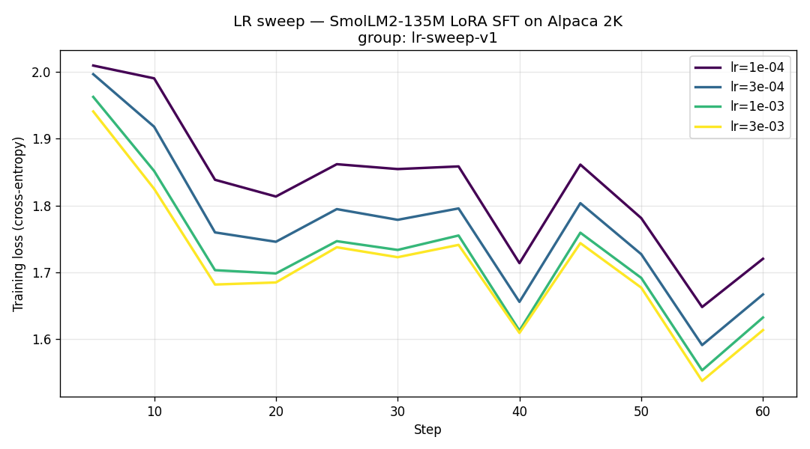
The classic SFT shape is visible everywhere: fast early drop (first ~20 steps), long slow tail. Higher LRs drop faster and settle lower. Nothing oscillates, nothing spikes — the regime is stable end-to-end.
What to notice: the gap between curves narrows as LR increases. Going 1e-4 → 3e-4 buys more final-loss improvement than going 1e-3 → 3e-3. This is the typical picture of an LR that's getting close to its ceiling — returns are diminishing.
Read this as: the sweep hasn't bracketed the optimum. I need an LR that actually breaks something to know where the ceiling is. Next run should extend to 1e-2, 3e-2, 1e-1.
Final loss vs. LR
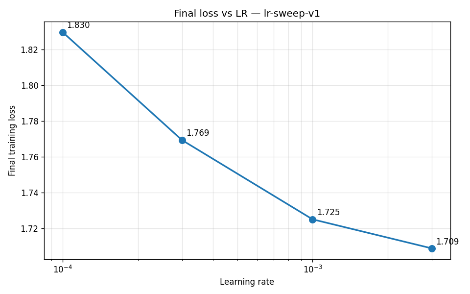
This is the same information as the table but makes the monotonicity obvious. A good LR sweep should produce a U-shape (or at least a clear elbow). This one doesn't — which is itself the most useful takeaway of the sweep.
Gradient norm
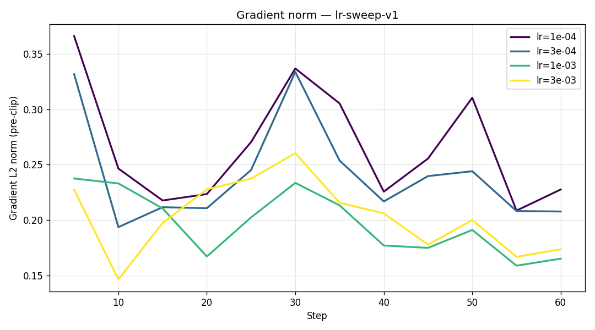
All four runs stay in a healthy band (roughly 0.1–2.0). No spikes to 100+, no persistent pinning at 1.0 (the clip value). That means max_grad_norm=1.0 isn't doing load-bearing work here — I could lower it or remove it and nothing would change in this regime.
Higher LRs show mildly larger norms, as expected. If I push LR to 1e-2 next time, watch this chart first: a grad-norm spike precedes a loss spike.
Token accuracy
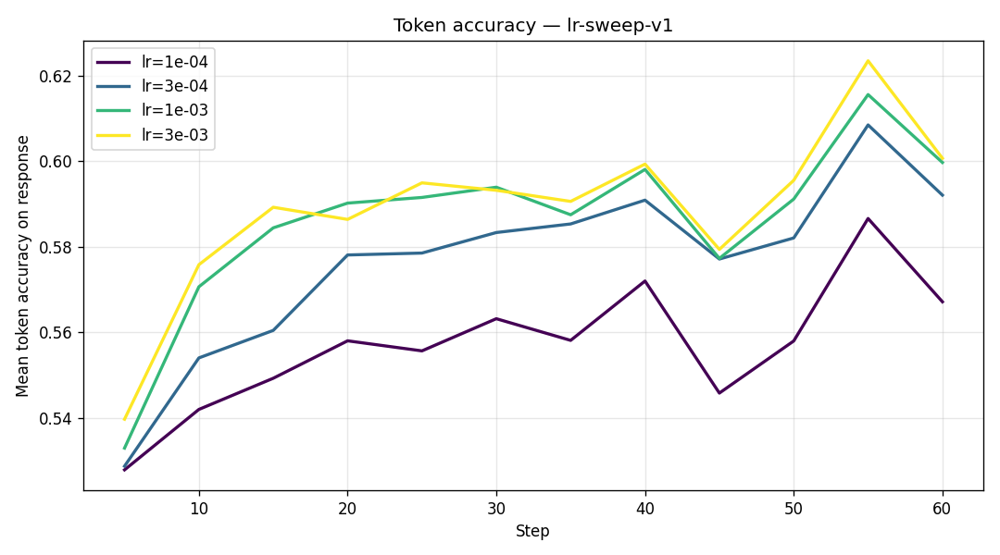
Same ordering as loss: higher LR → higher token accuracy, no surprise. But token accuracy plateaus around 56-58% even for the best run — this is a 135M model on noisy Alpaca data, not a capacity win, just a behavior-shift signal. Don't mistake this for "the model is getting smart."
Qualitative findings (the interesting part)
Training loss is the easy metric to stare at. The generations.jsonl file on 20 held-out prompts is where the real story lives. Three patterns keep repeating across the four runs:
Pattern 1 — Higher LR learns EOS better
"Write a haiku about the ocean."
lr=1e-4 to 1e-3: repeats "mystery, mystery, mystery" for 200 tokens, never stops.
lr=3e-3: "The ocean is a vast, mysterious, and mysterious place." — one sentence, then stops.
Interpretation: the adapter updates toward EOS-following behavior more aggressively at higher LR. The stopping token is learned from the <eos> appended to every completion — a faster-moving adapter absorbs that pattern sooner. Low LR runs don't "see" the EOS signal strongly enough in one epoch to imitate it.
Pattern 2 — Higher LR starts hallucinating
"What is the capital of Australia?"
All runs answer "Canberra". But lr=3e-3 continues: "...located in the capital city of Australia" — a tautology that wasn't there at lower LRs.
Interpretation: an over-eager adapter starts producing confident-but-wrong extensions. This is the classic cost of pushing LR too high on a small instruction-tuning corpus — the model learns a style of long confident answers, not the calibration behind them.
Pattern 3 — Loss is a misleading standalone metric
lr=3e-3 has the lowest training loss AND the worst calibration AND the best stopping behavior. Picking a winner from the loss column alone would have been wrong. The right move is to combine the loss number with a cheap 20-prompt qualitative sweep — a few minutes of reading outputs catches what the loss can't see.
Judge eval — does loss-ranking match quality-ranking?
The qualitative takeaway above was eyeballed. To verify, I ran GPT-4o-mini as an LLM-as-judge on the same 20 held-out prompts, using two protocols: pairwise (A vs B, judged in both orders to cancel position bias; 240 calls) and absolute (1-10 score per response; 80 calls). Total: 320 calls, ~20s wall-clock, ~$0.04.
Headline
Judge ranking and training-loss ranking agree at the extremes (lr=3e-3 best, lr=1e-4 worst) and disagree in the middle (lr=3e-4 vs lr=1e-3). The middle disagreement is almost certainly below the noise floor — more below.
Win rate (pairwise)
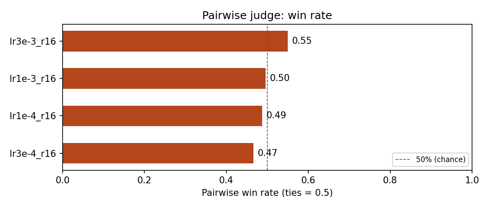
Mean absolute score
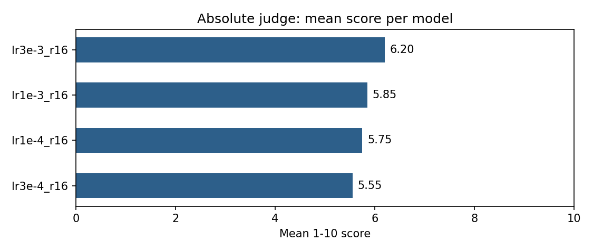
Ranking across metrics
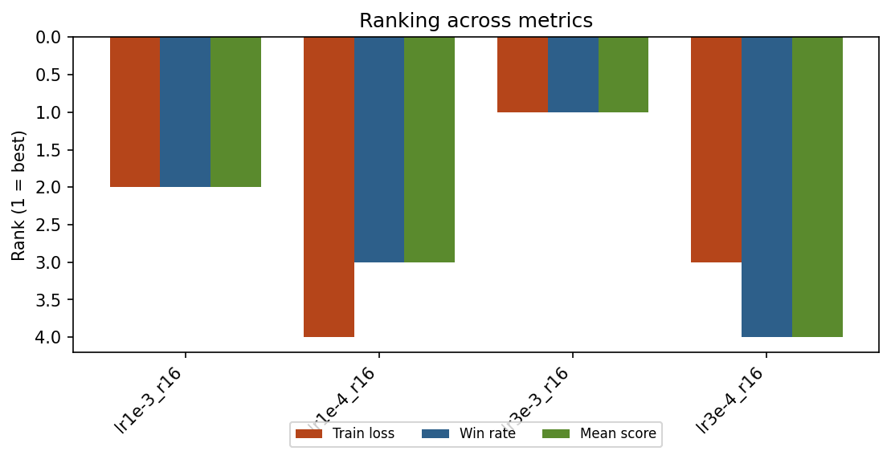
Both judge metrics agree with each other on the ordering. Relative to training loss, the judge swaps positions 2 and 3 — it thinks lr=3e-4 is slightly better than lr=1e-3, while training loss says the opposite.
Is the middle swap real?
No — it's within noise. Looking at the consensus judgments (counting only pairs where the judge gave the same verdict in both orders):
| Pair | Model A wins | Model B wins | Tie | Inconsistent (order-flipped) |
|---|---|---|---|---|
lr3e-4 vs lr1e-3 | 5 | 5 | 1 | 9 |
lr3e-3 vs lr1e-3 | 9 | 3 | 2 | 6 |
lr3e-3 vs lr1e-4 | 12 | 1 | 0 | 7 |
lr3e-4 vs lr1e-4 | 8 | 0 | 1 | 11 |
The lr=3e-4 vs lr=1e-3 row is a 5-5 tie on consensus and 9/20 prompts flip based on order — i.e., the judge couldn't reliably tell them apart. Meanwhile lr=3e-3 beats both middle runs solidly. The training-loss gap between the middle runs (1.725 vs 1.769 = 0.044) is real but below the quality-measurement noise floor at this sample size.
What the judge picked up that loss didn't
On "What is the capital of Australia?" the judge penalized lr=3e-3 for the tautology ("located in the capital city of Australia") — it preferred lr=1e-4's cleaner answer here despite lr=1e-4 having the worst overall score. That's exactly the failure mode the qualitative section flagged. The judge caught it per-prompt, but the win was outweighed by lr=3e-3's better EOS behavior on 12 other prompts.
Score distributions are bimodal for the good runs
Looking at absolute scores, the two middle/high runs (lr=3e-4, lr=3e-3) produce scores clustered at both ends: a cluster at 9-10 (prompts they handled well) and a cluster at 2-4 (prompts they broke on). They're not "mediocre everywhere" — they're "brilliant sometimes, broken sometimes." This is worth knowing: a mean score masks this structure entirely. The lr=1e-4 run is mostly 2-3 with no 9-10 cluster → broken everywhere.
Judge caveats to keep honest
- Position bias: 6-11 out of 20 pairs flipped when we swapped A/B order. Order-swap averaging handles this in aggregate but limits single-prompt confidence.
- Length bias: GPT-4o-mini is known to prefer longer responses. We added an explicit anti-length note in the rubric. Helps but doesn't fully fix.
- Small sample: 20 prompts. Gaps under ~0.1 in win-rate should not be trusted as real.
- Judge-model disagreement: running the same eval with Claude Sonnet (different architecture, different biases) would give an ensemble signal. For
$0.05it's worth the sanity check if a ranking matters.
Rank × LR sweep — does optimal LR shift with rank?
The LR sweep used fixed r=16. This second experiment varies both: 4 ranks (4, 8, 32, 64) × 3 LRs (1e-4, 1e-3, 1e-2) = 12 trials. Same setup: SmolLM2-135M, LoRA, Alpaca 2K, 1 epoch, 4× g6.xlarge spot. Alpha follows 2×r. Total wall clock ~10 min, ~$0.15 compute.
TL;DR
Optimal LR shifts down as rank increases. lr=1e-2 works fine at r=4 and r=8 but diverges at r=32 (loss 3.38) and r=64 (loss 8.99). lr=1e-3 is safe everywhere. The best overall config is lr=1e-3, r=64 by loss (1.710), but lr=1e-3, r=32 wins on judge quality (win rate 0.66, mean 6.15).
Loss heatmap — the money plot
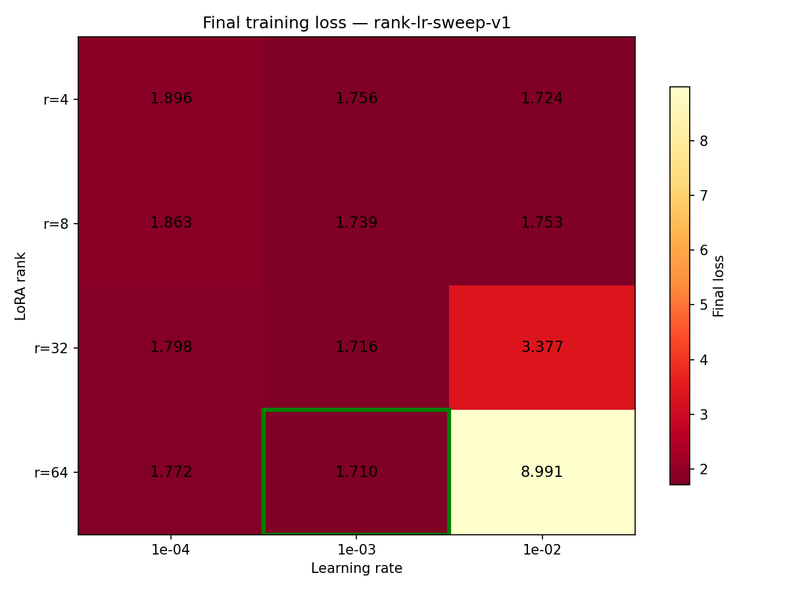
Three regimes are visible. lr=1e-4 (left column): loss decreases with rank but stays high — not enough learning. lr=1e-3 (middle): best losses across all ranks, monotonically improving from r=4 (1.756) to r=64 (1.710). lr=1e-2 (right): fine at low rank, catastrophic at high rank.
The divergence boundary sits between r=8 (1.753, fine) and r=32 (3.377, broken). This is the answer to "does optimal LR shift with rank?" — yes, and the shift is sharp, not gradual.
Results table
| Rank | lr=1e-4 | lr=1e-3 | lr=1e-2 | Trainable % |
|---|---|---|---|---|
| r=4 | 1.896 | 1.756 | 1.724 | 0.34% |
| r=8 | 1.863 | 1.739 | 1.753 | 0.68% |
| r=32 | 1.798 | 1.716 | 3.377 | 2.67% |
| r=64 | 1.772 | 1.710 | 8.991 | 5.20% |
Loss curves grouped by rank
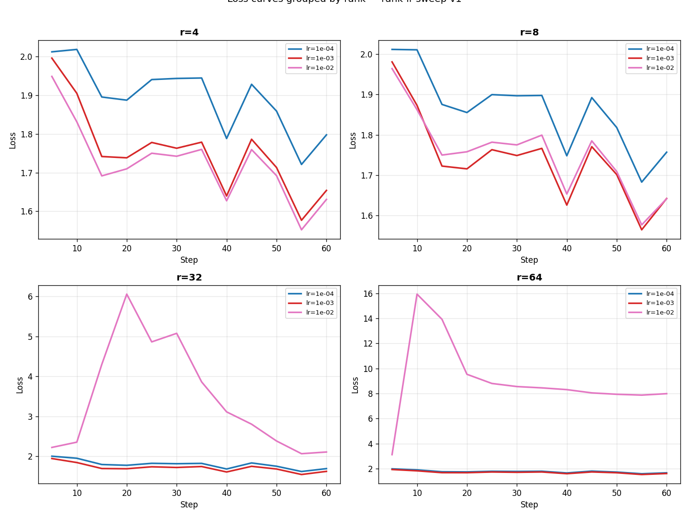
At r=4 and r=8, all three LRs converge smoothly — the curves are well-separated but none spikes. At r=32, lr=1e-2 starts high and stays high. At r=64, lr=1e-2 never drops below 5 — total training failure.
Does optimal LR shift with rank?
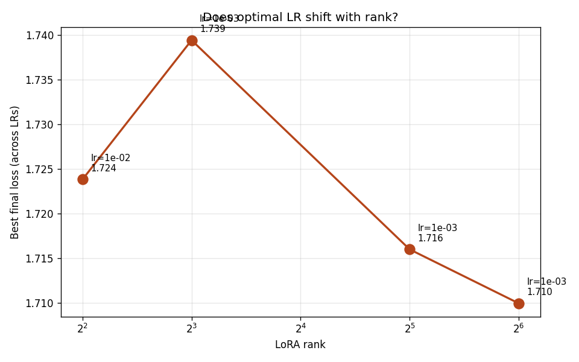
At r=4, lr=1e-2 wins. At r=8 through r=64, lr=1e-3 wins. The transition is between r=4 and r=8. This means the "best LR" depends on your rank — a recipe calibrated at r=16 may not transfer to r=64 without re-tuning.
Gradient norm — early warning for divergence
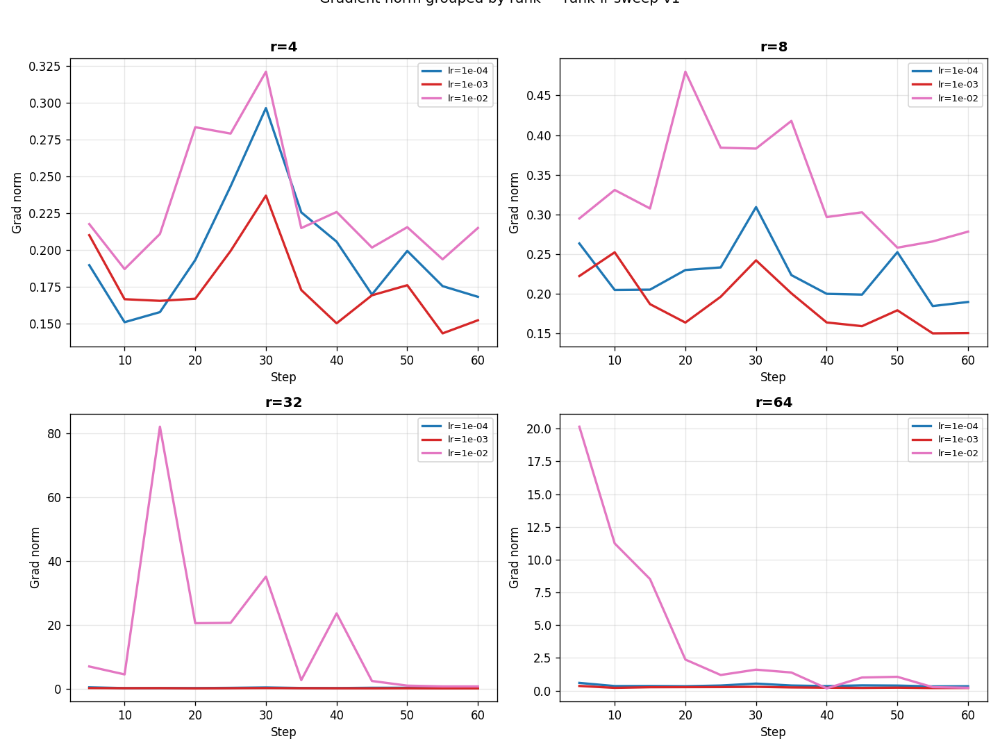
At r=64, the lr=1e-2 grad norm is wild from step 1 — the model never stabilized. At r=32, it's erratic but bounded. The grad norm chart is the best early-warning signal: if you see persistent spikes above 5.0 in the first 10 steps, kill the run.
More parameters → lower loss? (diminishing returns)
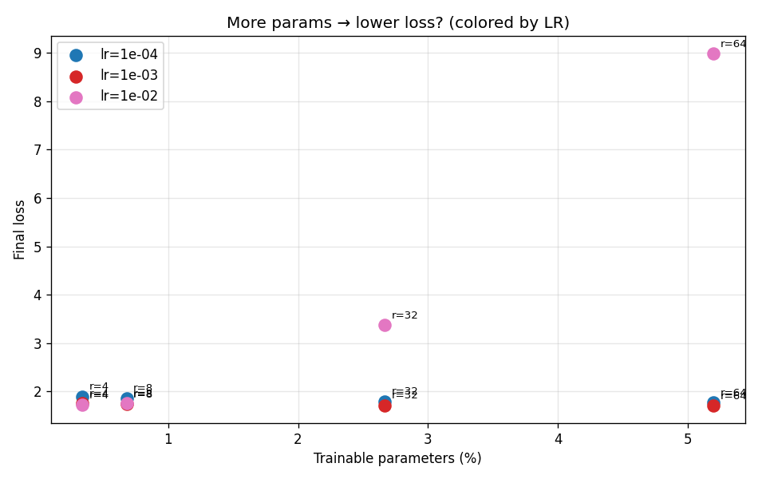
At lr=1e-3, going from 0.34% (r=4) to 5.2% (r=64) trainable params only buys 0.046 loss improvement (1.756 → 1.710). That's ~15× more parameters for ~2.6% lower loss. Diminishing returns kick in hard past r=16 — consistent with the folklore that r=16 is the default for instruction tuning.
Judge eval — quality tells a different story
Absolute 1-10 scores + pairwise win rate vs the lr-sweep-v1 baseline (lr=1e-3, r=16). 740 calls, $0.04, GPT-4o-mini.
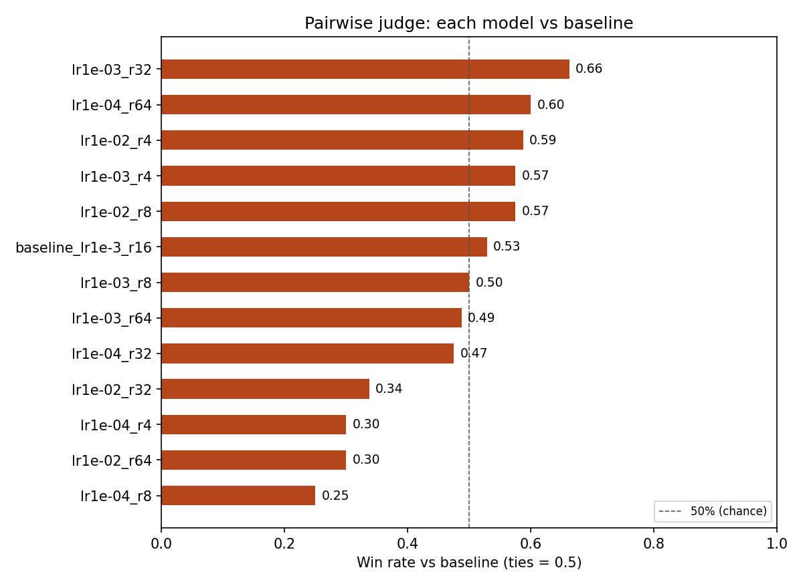
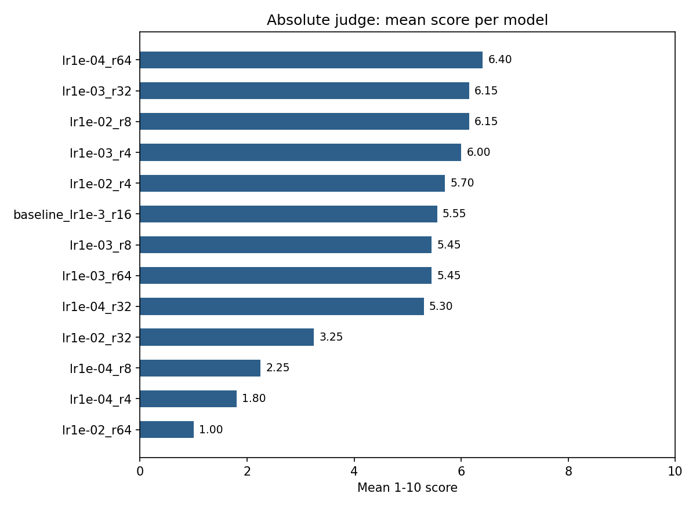
Notable findings:
- lr=1e-4 at r=4 and r=8 scored 1.80 and 2.25 — judge says these are broken despite train loss not looking terrible (1.90, 1.86). Same EOS-failure pattern from sweep v1: too-low LR doesn't learn stopping behavior.
- lr=1e-2, r=64 scored 1.00 — literally the worst possible. Diverged outputs are gibberish.
- lr=1e-3, r=32 has the best win rate (0.66) against the baseline. It beats lr=1e-3 r=64 despite having higher loss — same "loss ≠ quality" pattern, again.
- lr=1e-4, r=64 has the highest mean absolute score (6.40) but that's on a small sample (20 prompts). Don't over-index on it.
- Several new configs beat the previous baseline — rank tuning matters, not just LR.
4 Epochs — does longer training change the story?
The 1-epoch loss curves never plateaued, so I re-ran the same 4-LR sweep with --epochs 4 on the same infra (4× g6.xlarge spot, AMI ami-0c4c93517bd496890, ~9 min wall-clock per run, ~$0.13 total). Then ran the judge again on the new generations to see if the quality ranking changed.
TL;DR
Loss kept dropping for every LR — it had not plateaued at 1 epoch. The biggest improvement was at lr=3e-3 (Δ−0.51 final-step loss). But the quality gap between LRs collapsed: judge win rates went from a 0.34-spread (1ep) to a 0.08-spread (4ep). More training compresses the LR sensitivity that the 1-epoch sweep made look so dramatic.
Loss curves over 4 epochs
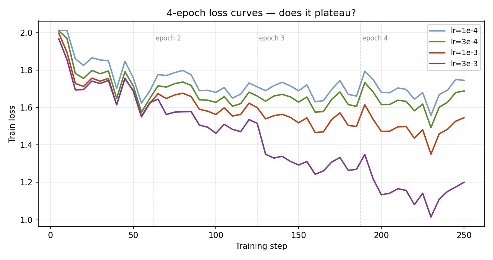
None of the curves are flat at the end. lr=3e-3 drops fastest and still has slope at step 250 — there's likely more headroom (and likely more overfitting) past 4 epochs. lr=1e-4 is the slowest learner — at 4 epochs it's reaching the loss values the higher LRs hit at 1 epoch.
1-epoch vs 4-epoch overlay
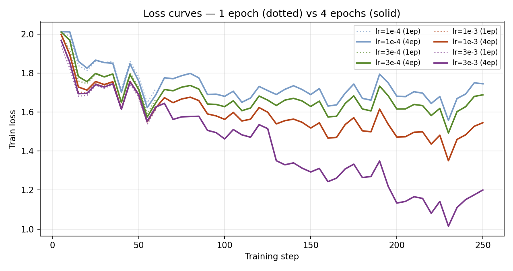
Note: the 4-epoch first epoch isn't identical to the 1-epoch run because the cosine LR schedule decays over 4× more steps. So the early loss is slightly higher at 4ep (the schedule keeps LR high longer), but the trajectory shape matches.
Final loss comparison
| LR | 1ep final-step loss | 4ep final-step loss | Δ |
|---|---|---|---|
1e-4 | ~1.83 | 1.745 | −0.085 |
3e-4 | ~1.77 | 1.689 | −0.080 |
1e-3 | ~1.73 | 1.545 | −0.180 |
3e-3 | ~1.71 | 1.200 | −0.510 |
Higher LRs have more headroom at extended training. Confirms the 1-epoch sweep was undersampling the difference — at 1 epoch the loss gap between lr=1e-3 and lr=3e-3 was 0.016, at 4 epochs it's 0.345 (20× larger).
Judge: did quality follow loss?
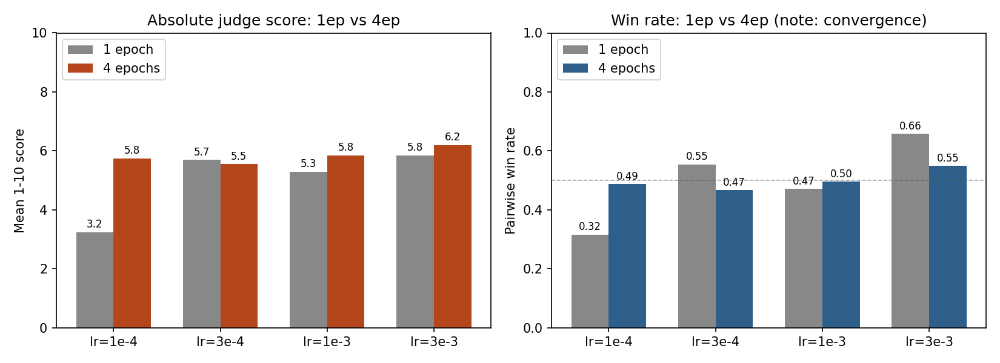
The dramatic finding: quality differences between LRs nearly vanished at 4 epochs. Specifically:
lr=1e-4went from broken to competitive — mean score 3.25 → 5.75. At 1 epoch this run was producing the "mystery, mystery" loops; at 4 epochs it's coherent. Just needed the time.lr=3e-3still wins on both metrics, but the margin shrunk: win rate 0.66 → 0.55, mean score 5.85 → 6.20.lr=3e-4actually got slightly worse by judge score (5.70 → 5.55). Within the noise floor we identified, but worth flagging — could be early overfitting at this LR for this corpus.- Win-rate spread went from 0.34 (1ep) to 0.08 (4ep): the rank ordering is now within the noise floor for almost every pair.
What this teaches
Open questions for the next iteration
- At what epoch does each LR start overfitting? (The judge slight regression at
lr=3e-4is suggestive.) - Does the absolute score ceiling (~6/10) move if we go to SmolLM2-360M or Qwen2.5-0.5B? — testing the "model capacity, not training" hypothesis.
- Would a third judge protocol (Claude Sonnet, gpt-4o) confirm the convergence story or reveal model-specific judge bias?
Artifacts: W&B group lr-sweep-4ep · local results/lr-sweep-4ep/ + results/lr-judge-4ep/
Bugs I hit — debug the next guy
- Homebrew awscli's bundled Python lost
cryptography.awsCLI silently broken. Fix:brew reinstall awscli. - Spot capacity is per-type.
g4dn.xlargehad zero spot capacity when I launched;g6.xlargeworked. Always have a fallback instance list. Prices viadescribe-spot-price-historyreport fine even when capacity is 0 — don't use price availability as a capacity signal. - DLAMI "Base" has CUDA but no Python ML stack. Drivers + nvcc are there; pytorch/conda aren't. Must
sudo apt install python3-venv python3-pipand build a venv from scratch. - Spot instances can't be stopped, only terminated. So for AMI creation, use
aws ec2 create-image --no-reboot. - peft 0.19 requires torch ≥ 2.7 (uses
torch.float8_e8m0fnu). The default pytorchcu124index ships torch 2.6. Switch tocu126→ torch 2.11 → peft works. Always check transitive dep versions before pinning. - TRL 1.x API rewrite.
DataCollatorForCompletionOnlyLMis gone. Replaced bySFTConfig(completion_only_loss=True)+ prompt/completion dataset columns.SFTConfigalso rejectsoverwrite_output_dir. - SFTTrainer renamed
tokenizer→processing_class. ~expands on the LOCAL shell inssh remote-cmd. Use/home/ubuntu/...explicitly for paths on the EC2 side.- Fresh EC2 has no S3 IAM role.
aws s3 syncfrom the instance fails with "Unable to locate credentials". Workaround used:scpresults to local, then sync from local.
Things to be careful of
trainable_params printout before every run. Should be 0.1-1% of total for a LoRA config. If it's 100%, LoRA didn't attach (wrong target_modules name, common when porting configs between model families).
completion = output + tokenizer.eos_token in the format function, the model never learns to stop. It won't crash, it'll just ramble in every eval.
lr=3e-3 didn't diverge here — full fine-tuning at that rate would NaN immediately. When reading other people's LR choices, check if they're LoRA or FT before copying.
/prepare-env blindly for TRL 1.x. The version pinning matters. Build AMI manually, capture working versions, save snapshot (ami-0c4c93517bd496890), reuse.
Interesting next experiments
Ranked by what I think teaches me the most per hour of compute:
-
Seed variability at the best configs.
Run
lr=1e-3, r=32andlr=1e-3, r=64with seeds {42, 43, 44}. Is the quality difference between them real or noise? Every ranking from a single-seed sweep is a point estimate. - Epochs sweep — done. Re-ran the original 4-LR sweep at 4 epochs (see 4 Epochs section). Surprise: loss kept dropping for every LR (no plateau), and the quality gap between LRs collapsed (win-rate spread 0.34 → 0.08). The 1-epoch sweep was overstating LR sensitivity.
-
Granular epochs sweep at the best LR.
Fix
lr=3e-3, train 8 epochs with checkpoints every 1 epoch, eval each with judge. The slight regression atlr=3e-4from 1ep → 4ep is suggestive of overfitting onset — find the actual sweet spot. - Model-size ablation. Re-run the LR × rank sweep on SmolLM2-360M and Qwen2.5-0.5B. Does the divergence boundary (r=8 → r=32 at lr=1e-2) shift with model size? Prediction: larger models tolerate lower LR/rank ratios.
- Grow the eval set to ~100 prompts. 20 prompts can't distinguish configs whose win-rate gap is <0.1. The middle of the ranking (lr=1e-3 r=4 vs r=8 vs r=64) is all within noise.
- Judge-ensemble sanity check. Re-run with Claude Sonnet as a second judge to verify the ranking is robust to judge choice.
After this, Phase 2 is DPO with a β sweep — the experiment whose results I actually care about for interviews (Greg's β question at Bespoke). The SFT checkpoint from this sweep (probably lr=1e-3, r=32 — judge winner, good loss, not-too-many params) becomes the starting point.